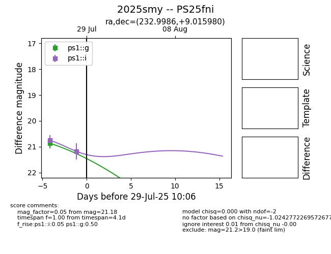

Target 2025smy at 2025-08-07 23:23, see:
TNS: wis-tns.org/object/2025smy
YSE: ziggy.ucolick.org/yse/transient_detail/2025smy
alt names
2025smy (yse,tns)
PS25fni (panstarrs)
coordinates:
equatorial (ra, dec) = (232.9986,+9.01598)
galactic (l, b) = (15.0994,+48.02445)
photometry
last ps1::g=20.89, ps1::i=21.17, ps1::r=21.01
1 ps1::g, 2 ps1::i, 1 ps1::r detections
